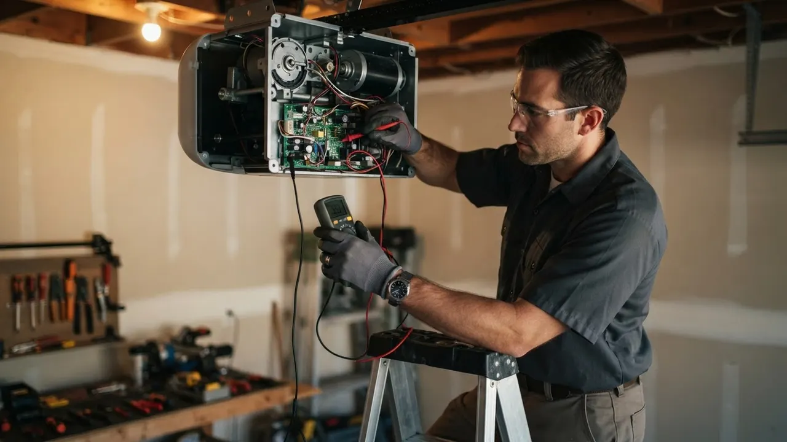

About Our Garage Door Repair Wilmington DE Team
Delaware Express Garage Door Service has handled Garage Door Repair Wilmington DE calls since 2010, from broken torsion springs in the Highlands to off-track doors in Trolley Square. We are a licensed, insured garage door company in Wilmington working out of New Castle County seven days a week.
Our story
How Delaware Express Started in Wilmington
Delaware Express Garage Door Service opened in 2010 with one truck, a socket wrench set, and a simple promise: show up when we say we will. The first calls came from along Concord Pike and the neighborhoods off Kirkwood Highway, mostly broken torsion springs and doors that had jumped the track. Sixteen years later we still run those same routes. If you have searched about garage door repair Wilmington DE and landed here, you are looking at the same crew that has been answering those calls since day one.
What we built since then is a licensed garage door repair company in Wilmington DE with stocked trucks and techs who carry winding bars, C-clamps, and a level on every job. We cover the 19802, 19806, and 19805 ZIP codes daily, plus 19801, 19809, and 19850 on scheduled routes. Torsion springs, galvanized steel cables, nylon rollers, and LiftMaster and Chamberlain openers are on the shelf, so most repairs finish the same day we arrive.

Practical standards, local accountability.
Delaware Express Garage Door ServiceWhat guides the work
What We Stand For
Our job is to get your door moving quietly and safely, then get out of your driveway. That means diagnosing the actual failure, not guessing. A snapped cable on a Wayne Dalton door and a stripped gear in a Genie opener look similar from the driver's seat, and they need different fixes. As a local garage door company Wilmington DE residents call back, we price the work before we start and stand behind it with a workmanship warranty. You get a door that opens on the first press, closes flush, and holds up through another Delaware winter.
Our values
How We Work
Four things shape every call we run in Wilmington, whether it is a spring replacement in Brandywine Village or an opener install near the Riverfront. None of them are slogans. They are the rules our techs work by.
Same-Day Response
Most Wilmington calls placed before noon get a tech the same day. A door stuck open is a security problem, and a door stuck closed traps your car. We keep two slots open daily for emergency garage door repair, including evenings and weekends. When a cable snaps at 9 p.m., you reach a person, not a voicemail box, and we book the visit on that call.
Code-Correct Work
Every opener we install meets the UL 325 safety standard, and we test the auto-reverse and photo-eye sensors before we pack up. Track brackets get torqued to spec, bottom seals sit flush, and spring counts match the door weight. Delaware contractor license, OSHA safety compliance, and DASMA certification guide how we work, not just how we advertise. If we touch it, it passes inspection.
Straight Pricing
You hear the price before we start, and it does not change because a job ran long. Spring replacements, cable swaps, and roller upgrades are quoted from the truck stock we carry. As a family owned garage door company Wilmington DE homeowners have used for years, we would rather lose a job on price than surprise a neighbor with a padded invoice after the work is done.
Built to Last
We install parts we would put on our own doors: galvanized cables, sealed bearings, and steel rollers that do not flatten in a year. When a Clopay or Amarr panel needs replacing, we match the profile and color instead of forcing a generic panel. That is what keeps a repair holding up three winters later, and it is why people looking for a garage door repair company near me Wilmington DE keep our number.
The people behind the work
Who Shows Up at Your Door
Our techs live in and around New Castle County, and most have been turning wrenches on overhead doors for a decade or more. They know the difference between a door that needs a new torsion spring and one that needs the whole counterbalance reset, and they carry the tools to do either on the first visit: winding bars, vise grips, a rubber mallet, safety glasses, and a tape measure for checking panel gaps. We run background-checked, uniformed crews, and every tech is trained on UL 325 safety testing and IDEA-certified hardware standards. When you call us for an experienced garage door technicians Wilmington Delaware visit, you get the same faces back on the next job. No subs, no rotating cast. Just the crew that has been fixing doors in this city since 2010.

Ways we can help
Garage Door Repair and Service We Handle
One truck, one visit, one fixed door. We handle everything from a stripped opener gear to a full custom door install, and we do it across Wilmington and New Castle County. If you need 24/7 garage door repair Wilmington DE because the door will not close and the house is open, call and we will roll.
Explore every service01
Garage Door Repair
Our core service covers whatever is keeping your door from running smooth: binding tracks, worn rollers, a dead motor, or a door that slams down. We diagnose on site, quote the fix, and finish most jobs the same day across Wilmington.
View service 02Garage Door Installation
New door going in? We set the tracks level, tension the springs to the door weight, and dial in the opener travel so it runs quiet from day one. Steel, wood, and insulated doors installed for Wilmington homes and small commercial bays.
View service 03Garage Door Opener Repair
A humming opener that will not lift usually means a stripped gear or a bad capacitor, not a whole new unit. We repair LiftMaster, Chamberlain, Genie, Craftsman, and Marantec openers and only replace what failed.
View serviceNotes from local customers
What Wilmington Customers Say
Our torsion spring snapped on a Sunday morning and the door was stuck open. They came out the same day, had the right spring on the truck, and had us closing again by early afternoon. Fair price and no upsell on a new opener.
I called three places and these guys were the only ones who could come out that day. The tech showed me the stripped gear and replaced just that instead of selling me a whole new motor. Door runs quieter than it has in years.
We manage a few rental properties near the Riverfront and use them for all the garage calls. They are quick, they text when they are on the way, and the invoices are clear. That is all I need.
Good work on the cable replacement, though they were about an hour later than the window they gave me. Once the tech got here he was fast and explained everything. Door has been fine since.
Our bottom seal was shot and water was getting in every storm. They replaced the seal and the weather stripping and also tightened up a loose track bracket I did not even know was an issue. Garage stays dry now.
Where we work
One local team. A lot of ground covered.
Downtown WilmingtonRiverfrontThe HighlandsTrolley SquareForty AcresBaynard VillageWawaset ParkCool SpringTrinity VicinityBrowntownLittle ItalyUnion Park Gardens
Check my address Before the visit
Garage Door Repair Wilmington DE Questions
The questions we get most, answered straight.
Still wondering?(302) 556-5080
Most repairs in Wilmington run $129 to $450 in 2026. A tune-up and adjustment is around $129 to $189, a spring or cable job typically lands between $260 and $450, and a bigger job like an opener and panel rebuild can run $480 to $900. You get the price before we start.
The best garage door company in Wilmington, Delaware is the one that shows up when it says it will and fixes the door right the first time. We have been doing this here since 2010, we stock parts on every truck, and we quote before we work. Call (302) 556-5080 and judge for yourself.
Yes. We run emergency calls around the clock for doors stuck open, doors off track, and snapped cables. Call (302) 556-5080 any time and we will get a tech headed your way, usually fast since we work out of Wilmington and cover New Castle County.
Look for a Delaware contractor who is insured, stocks parts on the truck, and quotes the job before starting. Ask whether they work to UL 325 and DASMA standards, and whether they repair openers instead of only replacing them. Those four things separate a real tech from a sales call.
Yes, and we handle it. If your door will not close, is hanging off the track, or a spring just snapped, call (302) 556-5080. We secure the door first, then repair it. Emergency calls are common for us in winter when cold snaps freeze hinges and stress old springs.
Your next step is waiting
Get Garage Door Repair Wilmington DE Homeowners Recommend
Licensed, insured, and serving Wilmington and New Castle County since 2010. Call (302) 556-5080 for a same-day visit, or book online and we will confirm your window within the hour.
Start with the basics
Call For Garage Door Service
Call (302) 556-5080 and tell us what your door is doing. We answer during business hours and run emergency calls after hours. Most days we can get a tech to you the same day, and we will give you a window, not a maybe.